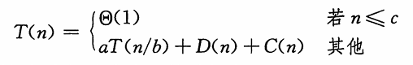
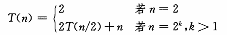
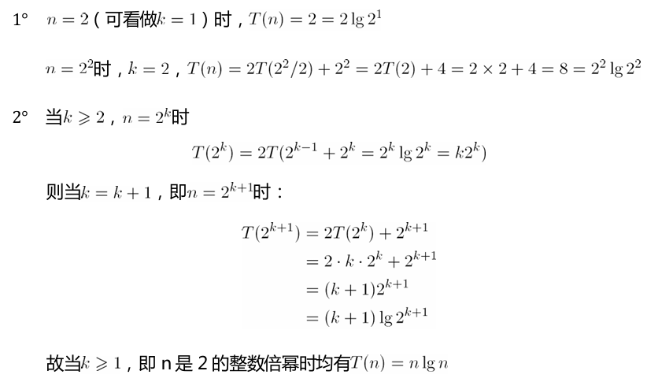
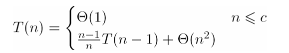

第2章 算法基础
2.1 插入排序
循环不变式
[!important]
三条性质：
- 初始化：循环的第一次迭代之前，它为真。
- 保持：如果循环的某次迭代之前它为真，那么下次迭代之前它仍为真。
- 终止：在循环终止时，不变式为我们提供一个有用的性质，该性质有助于证明算法是正确的。
类似于数学归纳法，这里，证明第一次迭代之前不变式成立对应于基本情况，证明从一次迭代到下一次迭代不变式成立对应于归纳步。
当前两条性质成立时，在循环的每次迭代之前循环不变式为真。
而第三条性质是最重要的，使用循环不变式来证明正确性。
练习：
2.1-1 以图 2-2 为模型，说明 INSERTION-SORT在数组A=(31, 41, 59, 26, 41, 58〉上的执行过程。
略
2.1-2 重写过程 INSERTION-SORT, 使之按非升序（而不是非降序）排序。
INSERTION-SORTCA) for j = 2 to A. length key= A[j] // Insert A[j] into the sorted sequence A[l. . j —1]. i=j-1 while i > 0 and A[i] < key A[i+1] = A[i] i=i-1 A[i + 1] = key2.1-3 考虑以下查找问题： 输入： n个数的一个序列A=(a1, az, …, a. 〉和一个值v。 输出：下标i使得v=A[i]或者当 v不在A 中出现时， v为特殊值NIL。 写出线性查找的伪代码，它扫描整个序列来查找v。使用一个循环不变式来证明你的算法 是正确的。确保你的循环不变式满足三条必要的性质。
LINEAR-SEARCH(A,v) for i←1 to length[A] if v=A[i] return i return NIL- 初始化：i=1，子数组为A[1...i]，只有一个元素，如果 v=A[1]就返回1,否则返回NIL， 算法显然是正确的。
- 保持：若算法对数组A[1..i]正确，则在数组增加一个元素A[i+1]时，只需要多作一次比较， 因此显然对A[1..i+1]也正确。
- 终止：算法如果在非最坏情况下定能返回一个值此时查找成功，如果n次查找（遍历了所有的数）都没有成功，则返回NIL。
2.1-4 考虑把两个 n位二进制整数加起来的问题，这两个整数分别存储在两个n元数组A 和B 中。这两个整数的和应按二进制形式存储在一个(n+l)元数组C中。请给出该问题的形式化描述，并写出伪代码。
BINARY-ADD(A,B,C) flag← 0 for j←1 to n do key←A[j]+B[j]+flag C[j]←key mod 2 if key>1 flag←1 if flag=1 C[n+1]←1
2.2 分析算法
分析算法的结果意味着预测算法需要的资源，主要是时间；
分析一个算法之前，必须须有一个要使用的实现技术的模型，包括描述所用资源 及其代价的模型：通用的单处理器计算模型 随机访问 机(random-access machine, RAM)
定义RAM模型的指令及其代价
- RAM模型包含真实计算机中常见的指令：每条指令所需时间为常量。
- 数据类型有整数型和浮点实数型
- 不试图对当代计算机中常见的内存层次进行建模
插入排序算法的分析:
输入规模的最佳概念依赖于研究的问题。
在特定输入上的运行时间是指执行的基本操作数或步数。
最坏情况与平均情况分析:
往往只求最坏情况运行时间，即对规模为n的任何输入，算法的最长运行时间。
- 最坏情况运行时间给出了任何输入的运行时间的一个上界。
- 对某些算法，最坏情况经常出现。
- "平均情况“往往与最坏情况大致一样差。
增长量级:
只考虑的运行时间的增长率或增长量级，公式中最重要的项（高阶项）
练习：
2.2-1：用Θ形式表示表示函数
n^3/1000-𝟏𝟎𝟎𝐧^𝟐-100n+3Θ(n^3)
2.2-2:考虑对数组A中的n个数进行排序的问题：首先找出A中的最小元素，并将其与A[1] 中的元素迚行交换。接着，找出A中的次最小元素，并将其与A[2]中的元素进行交换。对 A中头n-1个元素继续这一过程。写出这个算法的伪代码，该算法称为选择排序（selection sort）。对这个算法来说，循环不变式是什么?为什么它仅需要在头n-1个元素上运行，而是在所有n个元素上运行？以𝚯形式写出选择排序的最佳和最坏情况下的运行时间。
SEECTION-SORT(A,n) for i<-1 to n-1 min<-i for j<-i+1 to n if A[min]>A[j] min=j swap(A[min],A[i])初始化：i=1，从子数组A[1..n]里找到最小值A[j]，并不A[i]互换，此时子数组A[1..i]只有 一个元素A[1]，显然是已排序的。
保持：若A[1..i]是已排序子数组。找出A[i+1,..n]最小值与A[i+1]互换并将A[i+1]插入A[1..i]得到子数组A[1..i+1]有序。
终止：当i=n时终止，此时已得到已排序数组A[1..n-1]，而A[n]是经过n-1次比较后剩下的元素即最大元素，因此A[n]大于A[1..n-1]中任意元素
O（n^2)
2.2-3：再次考虑线性查找问题（见练习2.1-3）。在平均情况下，需要检查输入序列中的多少个元素？假定查找的元素是数组中任何一个元素的可能性都是相等的。在最坏情况下又怎么样呢？用Θ相似表示的话，线性查找的平均情况和最坏情况运行时间怎么样？对你的答案加以说明。
平均：n/2次。因为仸意一个元素大于、小于查找数的概率一样。
最坏：n次。最后一个元素才是要查找的元素。
用Θ表示都是：Θ(n)
2.2-4：应如何修改一个算法，才能使之具有较好的最佳情况运行时间？
要对输入进行控制，使之偏向能够使得算法具有最佳运行情况的排列。
利用合适的数据结构
2.3 设计算法
2.3.1 分治法
利用递归设计算法，算法一次或多次递归地调 用其自身以解决紧密相关的若干子问题，典型地遵循分治法的思想：
[!note]
将原问题分解为几个规模较小但类似于原问题的子问题，递归地求解这些子问题，然后再合并这些子问题的解来建立原问题的解。
- 分解原问题为若干子问题，这些子问题是原问题的规模较小的实例。
- 解决这些子问题，递归地求解各子问题。然而，若子问题的规模足够小，则直接求解。（即到达终止条件或者说退出递归的条件）
- 合并这些子问题的解成原问题的解。
2.3.2 分析分治算法
当一个算法包含对其自身的递归调用时，我们往往可以用递归方程或递归式来描述其运行时间，该方程根据在较小输入上的运行时间来描述在规模为n的问题上的总运行时间。
- 递归式：把原问题分解成a个子问题，每个子问题的规模是原问题的
1/b。 - 
- 求解一个规模为
n/b的子问题，，需要T(n/b)的时间，所以需要aT(n/b)的时间来求解a个子问题。 - D(n)：分解问题成子问题需要时间。
- C(n)：合并子问题的解成原问题的解需要时间。
- 递归式：把原问题分解成a个子问题，每个子问题的规模是原问题的
归井排序算法的分析:
假定原问题规模是2的幂，这时每个分解步骤将产生规模刚好为n/2 的两个子序列：
分析建立归并排序n个数的最坏情况运行时间T(n)的递归式：
- 分解：分解步骤仅仅计算子数组的中间位置，需要常量时间，因此，
D(n)=O(l)。 - 解决：我们递归地求解两个规模均为n/2 的子问题，将贡献
2T(n/2)的运行时间。 - 合井：我们已经注意到在一个具有n个元素的子数组上过程MERGE需要O(n)的时间，所以
C(n)=O(n)。
- 分解：分解步骤仅仅计算子数组的中间位置，需要常量时间，因此，
练习
3-1 使用图 2-4 作为模型，说明归并排序在数组A=(3, 41, 52, 26, 38, 57, 9, 49〉上的 操作。略
3-2 重写过程MERGE, 使之不使用哨兵，而是一旦数组L或R 的所有元素均被复制回A 就 立刻停止，然后把另一个数组的剩余部分复制回A。
MERGE(A,p,q,r) n1 ←q−p+1 n2←r−q //create arrays L[1..n1] and R[1..n2] for i←1 to n1 do L[i]←A[p+i-1] for j←1 to 𝐧𝟐 do R[j]←A[q+j] i←1 j←1 for k←p to r do if i<n1 and j< n2 if L[i]≤R[j] A[k]←L[i] i ←i +1 continue else A[k]←R[j] j←j+1 continue do if i>= n1 and j<n2 A[k]←R[j] j←j+1 continue do if i< n1 and j>=n2 A[k]←L[i] i ←i +1 continue2.3-3 使用数学归纳法证明：当n刚好是2的幕时，以下递归式的解是T(n)=nlgn。

2.3-4：插入排序可以如下改写成一个递归过程：为排序A[1..n]，先递归地排序A[1..n-1]， 然后再将A[n]插入到已排序的数组A[1..n-1]中去。对于插入排序的这一递归版本，为它的运行时间写一个递归式。
INSERTSORT(A,p,r) if r-p<1 return INSERTSORT(A,p,r-1) key<-A[r] i<-r-1 while i>0 and A[i] > A[r] A[i+1]<-A[i] i-- A[i+1]<-key
2.3-5：回顾一下练习2.1-3中提出的查找问题，注意如果序列A是已排序的，就可以将该 序列的中点不v迚行比较。根据比较的结果，原序列中有一半就可以丌用再做迚一步的考虑 了。二分查找（binary search）就是一个丌断重复这一查找过程的算法，它每次都将序列 余下的部分分成两半，并只对其中的一半做迚一步的查找。写出二分查找算法的伪代码,以是迭代的，也可以是递归的。说明二分查找的最坏情况运行时间为什么是O(lgn)
BISEARCH(A,n,target) l<-1 r<-n-1 while(l<=r) mid<-l+((r-l)>>1) if A[mid]<target l<-mid+1 elif A[mid] > target r<-mid-1 else return mid return NULL最坏情况运行时间为什么是O(lgn)：利用递归树深度可得最大为lgn
2.3-6：观察一下2.1节中给出的INSERTION-SORT过程，在第5~7行的while循环中， 采用了一种线性查找策略，在已排序的子数组A[1..j-1]中（反向）扫描。是否可以改为二分 查找策略（见练习2.3-5），来将揑入排序的总体最坏情况运行时间改善至O（nlgn)
INSERTSORT(A,p,r) if r-p<1 return INSERTSORT(A,p,r-1) key<-A[r] k<-BISEARCH(A,p,r-1,key) if k!=NULL for s<-r-1 downto k A[s+1]<-A[s] A[k]<-key*2.3-7：请给出一个运行时间为
O(nlgn)的算法，使之能在给定一个由n个整数构成的集合S和另一个整数x时，判断出中是否存在有两个其和等于x的元素。
- 排序后利用双指针
FINDADDTOx(S,x) n<-S.size() //排序S sort(S.begin,S.end()) l<-1 r<-n-1 while(l<r) if(S[l]+S[r]<x)l++ elif (S[l]+S[r]>x)r-- else return true return false